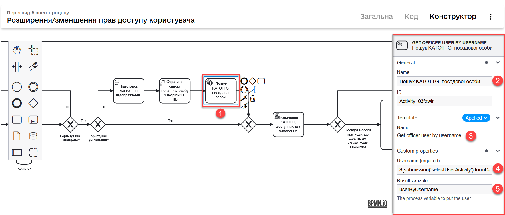

Рольова модель за територіальною прив’язкою (КАТОТТГ)
- 1. Загальний опис
- 2. Завантаження користувачів до системи
- 3. Налаштування правил для рольової моделі
- 4. Застосування рольової моделі у бізнес-процесах
- 4.1. Перевірка роботи правил рольової моделі
- 4.2. Додавання та видалення прав доступу до об’єктів за ієрархічною моделлю
- 4.2.1. Внесення даних про посадову особу на формі
- 4.2.2. Скрипт підготовки атрибутів для пошуку користувача у Keycloak
- 4.2.3. Пошук посадової особи у сховищі Keycloak за внесеними даними
- 4.2.4. Перевірка, чи знайдено користувача
- 4.2.5. Перевірка користувача на унікальність
- 4.2.6. Скрипт підготовки даних користувача для відображення на формі (альтернативний шлях)
- 4.2.7. Визначення необхідного користувача зі списку на формі (альтернативний шлях)
- 4.2.8. Пошук посадової особи у Keycloak за іменем користувача (альтернативний шлях)
- 4.2.9. Скрипт для визначення атрибутів рольової моделі, доступних для видалення у користувача
- 4.2.10. Перевірка, чи можливо змінити атрибути доступу посадовій особі
- 4.2.11. Створення View label для кожного кода користувача на формі
- 4.2.12. Скрипт для визначення рівня отриманих КАТОТТГ
- 4.2.13. Пошук сутностей у фабриці даних
- 4.2.14. Скрипт формування codeLabels для відображення інформації за кожним атрибутом на UI-формі
- 4.2.15. Скрипт підготовки даних користувача та його codeLabels для відображення на UI-формі
- 4.2.16. Користувацька задача (UI-форма) для додавання/видалення атрибутів доступу
- 4.2.17. Скрипт підготовки доданих та видалених атрибутів для збереження в Keycloak
- 4.2.18. Збереження атрибутів посадової особи до Keycloak
- 4.3. Моделювання UI-форм введення даних
- 4.4. Пов’язані делегати
1. Загальний опис
Що таке ієрархічна рольова модель?
Ієрархічна рольова модель — це система управління доступом до ресурсів, де користувачі мають різні ролі та рівні доступу, залежно від певного атрибута. У такій моделі ролі та права доступу розподілені відповідно до ієрархії, де вищі рівні мають доступ до ресурсів нижчих рівнів, але не навпаки.
У цьому контексті можна використовувати будь-який атрибут, який відображає ієрархічну структуру ролей та рівнів доступу. Головне, щоб атрибут у Keycloak та назва колонки в базі даних збігалися, для коректного присвоєння та контролю доступу користувачів до об’єктів на основі цього атрибута.
Як можна реалізувати ієрархічну модель на платформі?
Ієрархічна рольова модель може бути застосована на прикладі використання атрибута КАТОТТГ. У такому випадку, КАТОТТГ виступає як ієрархічний атрибут, який відображає рівні доступу користувачів до ресурсів.
Наприклад, користувач з вищим рівнем КАТОТТГ має доступ до інформації користувачів з нижчим рівнем КАТОТТГ, але користувач з нижчим рівнем не має доступу до інформації користувачів з вищим рівнем. Система контролює доступ до ресурсів на основі значень КАТОТТГ, які присвоюються користувачам через Keycloak та відповідні колонки в базі даних.
Таким чином, використання атрибута КАТОТТГ дозволяє створити ієрархічну рольову модель, що допомагає ефективно управляти доступом користувачів до ресурсів згідно з їхніми ролями та рівнями ієрархії.
Що таке КАТОТТГ?
КАТОТТГ — кодифікатор адміністративно-територіальних одиниць та територій територіальних громад, національний реєстр адміністративно-територіальних одиниць та територій територіальних громад України, введений 26 листопада 2020 року наказом Міністерства розвитку громад та територій України (Мінрегіону).

| Рівень КАТОТТГ | Пояснення |
|---|---|
«Перший рівень» |
3-й та 4-й символи у коді. Автономна Республіка Крим, області та міста, що мають спеціальний статус. |
«Другий рівень» |
5-й та 6-й символи у коді. Райони в областях та Автономній Республіці Крим. |
«Третій рівень» |
7-й, 8-й та 9-й символи у коді. Території територіальних громад в областях, територіальні громади Автономної Республіки Крим. |
«Четвертий рівень» |
10-й, 11-й та 12-й символи у коді. Міста, селища міського типу, села, селища (населені пункти). |
«Додатковий рівень» |
13-й та 14-й символи у коді. Райони у містах (у тому числі в містах, що мають спеціальний статус). |
«Системний номер» |
Останні 5 цифр — це системний код, що присвоєний автоматично і надалі не буде змінюватися ні при яких адмінреформах (при переході з регіону до регіону або з району до району цей код залишається незмінним). |
| Категорія об’єкта | Пояснення |
|---|---|
«O» |
Автономна Республіка Крим, області. |
«K» |
Міста, що мають спеціальний статус. |
«P» |
Райони в областях та Автономній Республіці Крим. |
«H» |
Території територіальних громад (назви територіальних громад) в областях, територіальні громади Автономної Республіки Крим. |
«M» |
Міста |
«T» |
Селища міського типу |
«C» |
Села |
«X» |
Селища |
«B» |
Райони в містах |
| Міністерство розвитку громад та територій України — Кодифікатор адміністративно-територіальних одиниць та територій територіальних громад |
Що таке рольова модель на базі КАТОТТГ?
Ієрархічно-рольова модель у системі побудована на RLS-правилах доступу до об’єктів із прив’язкою до таблиць-довідників кодифікатора КАТОТТГ.
Завдяки такому підходу користувач матиме доступ до певного рівня рольової моделі, або рівнів, які знаходяться нижче за ієрархією КАТОТТГ. Іншими словами, якщо користувач має доступ до об’єктів за кодом, наприклад, Сумської області, то відповідно він матиме доступ і до об’єктів в межах усіх адміністративно-територіальних одиниць цієї області (район області, територіальна громада, населений пункт, район міста).
|
Правила доступу можуть бути встановлені для будь-якої колонки в таблиці, що дозволяє контролювати доступ користувачів до записів на різних рівнях. Для цього, атрибут користувача у Keycloak має збігатися із назвою колонки у базі даних реєстру. Цей принцип застосовується не лише для атрибута Завдяки такому підходу, користувачі можуть встановлювати правила для читання, створення та редагування записів, використовуючи різні атрибути. Основна вимога полягає у тому, щоб атрибут в Keycloak відповідав назві колонки в базі даних, що забезпечує належний доступ до ресурсів на основі визначених правил та атрибутів користувачів. |
2. Завантаження користувачів до системи
Ієрархічна рольова модель базується на прив’язці користувачів до відповідних атрибутів доступу. У системі такі атрибути необхідно додати кожному користувачу у сервісі Keycloak. Зробити це можна як у ручному режимі, так і автоматично, при імпорті користувачів (посадових осіб) до системи через файл.
| Детальну інформацію щодо завантаження користувачів до системи ви можете переглянути на сторінках Внесення користувачів до системи. |
3. Налаштування правил для рольової моделі
Ієрархічно-рольова модель налаштовується на рівні регламенту реєстру в директорії registry-regulations/data-model. Для правильної роботи моделі, регламент повинен містити відповідну структуру файлів, описану у розділі Структура регламенту для використання рольової моделі.
3.1. Структура регламенту для використання рольової моделі
-
Модель даних реєстру повинна містити 2 основні файли з XML-схемами, які мають відношення до кодифікатора КАТОТТГ. Наприклад:
-
tablesKatottg.xml — схема для таблиць-довідників із кодами КАТОТТГ, а також категорій об’єктів за кодифікатором.
-
populateKatottg.xml — схема із викликом процедур для заповнення таблиць tablesKatottg.xml даними кодифікатора КАТОТТГ.
-
-
Необхідно змоделювати структуру таблиць-представлень (view) в окремому файлі для пошуку об’єктів за КАТОТТГ. Наприклад:
-
createSearchConditionsKatottg.xml
-
-
Також необхідно створити файл, що міститиме таблиці для операцій з об’єктами за КАТОТТГ у вашому реєстрі. Наприклад:
-
tablesConsent.xml
-
-
Необхідно додати змодельовані файли-схеми як посилання через директиву
<include file … />у файлі main-liquibase.xml:Приклад 1. Додавання посилань до файлів у main-liquibase.xml<databaseChangeLog...> <include file="data-model/tablesKatottg.xml"/> <include file="data-model/populateKatottg.xml" context="pub"/> <include file="data-model/createSearchConditionsKatottg.xml"/> <include file="data-model/tablesConsent.xml"/> </databaseChangeLog> -
Додайте до директорії регламенту data-model/data-load файли-довідники для наповнення створених таблиць-довідників даними. Довідники мають бути у форматі CSV. Вони містять дані кодифікатора з кодами КАТОТТГ за рівнями ієрархії, а також окремо - файл-довідник з позначенням категорій об’єктів КАТОТТГ.
-
Katottg_category.csv
-
Katottg_level1.csv
-
Katottg_level2.csv
-
Katottg_level3.csv
-
Katottg_level4.csv
-
Katottg_level5.csv
Переконайтеся, що маєте останню версію довідника-кодифікатора. Дані КАТОТТГ публікуються регулярно на сайті www.minregion.gov.ua у форматі .xls. -
-
Наповніть таблиці-довідники даними КАТОТТГ за допомогою функції виклику процедур завантаження даних до БД. Виклик процедури завантаження даних до таблиць довідників виглядає наступним чином:
Приклад 2. Виклик процедури завантаження даних до таблиць-довідників<changeSet author="registry owner" id="load data to dictionaries"> <sql ...> CALL p_load_table_from_csv('katottg_category', '${dataLoadPath}Katottg_category.csv', array['code','name']); CALL p_load_table_from_csv('katottg', '${dataLoadPath}Katottg_level1.csv', array['code','name', 'category'], array['code','name', 'category', 'level::''1''']); CALL p_load_table_from_csv('katottg', '${dataLoadPath}Katottg_level2.csv', array['code','name', 'category', 'katottg_parent'], array['code','name', 'category', 'level::''2''', 'katottg_parent_id::ref(lookup_col:katottg_parent,ref_table:katottg,ref_col:code,ref_id:katottg_id)']); CALL p_load_table_from_csv('katottg', '${dataLoadPath}Katottg_level3.csv', array['code','name', 'category', 'katottg_parent'], array['code','name', 'category', 'level::''3''', 'katottg_parent_id::ref(lookup_col:katottg_parent,ref_table:katottg,ref_col:code,ref_id:katottg_id)']); CALL p_load_table_from_csv('katottg', '${dataLoadPath}Katottg_level4.csv', array['code','name', 'category', 'katottg_parent'], array['code','name', 'category', 'level::''4''', 'katottg_parent_id::ref(lookup_col:katottg_parent,ref_table:katottg,ref_col:code,ref_id:katottg_id)']); CALL p_load_table_from_csv('katottg', '${dataLoadPath}Katottg_level5.csv', array['code','name', 'category', 'katottg_parent'], array['code','name', 'category', 'level::''5''', 'katottg_parent_id::ref(lookup_col:katottg_parent,ref_table:katottg,ref_col:code,ref_id:katottg_id)']); </sql> </changeSet>
| Для зручності виконання операції завантаження даних кодифікатора КАТОТТГ до системи, рекомендуємо розбити файл-кодифікатор на окремі файли за рівнями. Також рекомендуємо відділити колонку "Категорія об’єкта" в окрему таблицю, дані до якої завантажуватимуться окремим файлом. |
3.2. Типи правил RLS, які підтримує система
Безпека на рівні рядка (англ. — Row-level security або RLS) — це механізм контролю доступу до рядків у таблиці бази даних.
RLS допомагає впроваджувати обмеження на доступ до рядка даних. Наприклад, ви можете гарантувати, що співробітники отримають доступ лише до тих рядків даних, які стосуються їх повноважень.
Система використовує RLS-правила для налаштування ієрархічно-рольової моделі на основі кодів КАТОТТГ. Правила застосовуються до колонок таблиць, які містять атрибут katottg. Налаштування відбувається на рівні моделі даних (Liquibase) у регламенті реєстру — registry-regulations/data-model.
Правила є механізмом перевірки рольової моделі, при якому користувач може здійснювати операції створення, оновлення, або читання даних лише у тому випадку, якщо у нього є права доступу до об’єктів відповідної адміністративно-територіальної одиниці за кодифікатором КАТОТТГ.
- Система використовує 4 типи правил перевірки рольової моделі:
-
-
addWriteRule— додати права на створення, або оновлення об’єктів у базі даних на основі КАТОТТГ. -
removeWriteRule— видалити права на створення, або оновлення об’єктів у базі даних на основі КАТОТТГ. -
addReadRule— додати права на пошук (читання) інформації про об’єкти в базі даних на основі КАТОТТГ. -
removeReadRule— видалити права на пошук (читання) інформації про об’єкти в базі даних на основі КАТОТТГ.Детальну інформацію щодо застосування правил перевірки рольової моделі ви можете переглянути у розділі Застосування правил RLS до моделі даних. Правила категорії
write(write_rls) використовуються для звичайних операційних таблиць БД реєстру.Правила категорії
read(read_rls) використовуються для таблиць критеріїв пошуку (Search Conditions), тобто для таблиць-представлень реєстру.
-
3.3. Застосування правил RLS до моделі даних
За необхідності застосування рольової моделі до даних реєстру, потрібно на рівні моделі даних Liquibase додати правила рольової моделі — Row-level Security (RLS).
| Система вираховує рівень доступу до об’єктів даних за ієрархією, відповідно до встановлених правил RLS. Не потрібно визначати додаткові обмеження на рівні регламенту у бізнес-процесах. |
Після створення таблиць, таблиць-представлень (view), таблиць довідників, а також наповнення їх даними КАТОТТГ, можна застосовувати правила рольової моделі у сценаріях відповідного реєстру.
3.3.1. Визначення правил "write_rls" для створення та оновлення об’єктів за КАТОТТГ
-
Для прикладу, створіть таблицю для опрацювання заявок (взаємодія з об’єктами у БД) за рольовою моделлю з умовною назвою
request_by_katottg.Приклад 3. Створення таблиці для опрацювання заявок за рольовою моделлю<changeSet id="table request by katottg" author="registry owner"> <createTable tableName="request_by_katottg" ext:historyFlag="true" remarks="Заявки рольової моделі"> <column name="request_by_katottg_id" type="UUID" defaultValueComputed="uuid_generate_v4()"> <constraints nullable="false" primaryKey="true" primaryKeyName="pk_request_by_katottg_id"/> </column> <column name="name" type="TEXT"> <constraints nullable="false"/> </column> </createTable> </changeSet> -
Додайте до цієї таблиці додатковий стовпець
"katottg":Приклад 4. Додавання колонкиkatottgдо таблиці в моделі даних<column name="katottg" type="TEXT"> <constraints nullable="false"/> </column>Приклад 5. Фінальний вигляд таблиціrequest_by_katottgу моделі даних<changeSet id="table request by katottg" author="registry owner"> <createTable tableName="request_by_katottg" ext:historyFlag="true" remarks="Заяви рольової моделі"> <column name="request_by_katottg_id" type="UUID" defaultValueComputed="uuid_generate_v4()"> <constraints nullable="false" primaryKey="true" primaryKeyName="pk_request_by_katottg_id"/> </column> <column name="name" type="TEXT"> <constraints nullable="false"/> </column> <column name="katottg" type="TEXT"> <constraints nullable="false"/> </column> </createTable> </changeSet> -
Для цієї таблиці як окремий
<changeSet…>необхідно додати правила рольової моделі (RLS) —write_rls, тобто надання привілеїв доступу до створення, або оновлення об’єктів за рольовою моделлю.write_rls— правила перевірки рольової моделі, при яких користувач може здійснювати операції створення та оновлення даних лише у тому випадку, якщо він має права доступу до певного об’єкта відповідної адміністративно-територіальної одиниці за кодифікатором КАТОТТГ (область, район області, територіальна громада області тощо).Приклад 6. Додавання правил write_rls до таблиціrequest_by_katottg<changeSet id="request by katottg rls1" author="registry owner"> <ext:rls name="write_rls1"> <ext:addWriteRule name="writeRule1" jwtAttribute="katottg" checkColumn="katottg" checkTable="request_by_katottg"/> </ext:rls> </changeSet>-
<ext:rls name="write_rls1">— атрибут назви правила для рольової моделі. -
<ext:addWriteRule … />— тип правила для надання прав запису та оновлення об’єктів за КАТОТТГ. -
name="writeRule1"— атрибут назви правилаaddWriteRule. -
jwtAttribute="katottg"— JWT-атрибут. Система перевіряє цей атрибут і автоматично вичитує, які привілеї та права має користувач і відповідно до цих привілеїв показує лише ті об’єкти, до яких він має доступ. Всі інші об’єкти фабрика даних не повертатиме.Фабрика даних може прийняти будь-яке значення атрибута jwtAttribute, та завантажити користувачів можна лише зі значеннямjwtAttribute="katottg". -
checkTable="request_by_katottg"— атрибут визначає, що необхідно перевіряти таблицюrequest_by_katottg. -
checkColumn="katottg"— атрибут визначає, що необхідно перевіряти колонкуkatottgтаблиціrequest_by_katottg.
В одному changeSet можна додати одне та більше правил лише одного типу. Для різних типів правил використовуйте різні changeSet. Наприклад:
<changeSet author="registry owner" id="create write_rls rule1"> <ext:rls name="write_rls10"> <ext:addWriteRule name="writeRule1" ... /> <ext:addWriteRule name="writeRule2" ... /> <ext:addWriteRule name="writeRule3" ... /> </ext:rls> </changeSet>Детальну інформацію щодо типів RLS-правил у системі ви можете переглянути у розділі Типи правил RLS, які підтримує система.
Імена для правил мають бути унікальними. Якщо на рівні моделі даних встановлено правило певного типу, наприклад, addWriteRule, але користувач не має призначеного атрибута KATOTTG у сервісі Keycloak, то такий користувач не матиме доступу до об’єктів у базі даних взагалі. -
3.3.2. Скасування прав доступу write_rls
Скасувати права доступу write_rls можна за допомогою правила видалення removeWriteRule в окремому changeSet:
request_by_katottg<changeSet id="request by katottg rls1" author="registry owner">
<ext:rls name="write_rls1">
<ext:removeWriteRule name="writeRule1" />
</ext:rls>
</changeSet>3.3.3. Визначення правил "read_rls" для пошуку об’єктів за КАТОТТГ
Розглянемо випадок, коли необхідно виконувати пошук за 2-ма критеріями у певній таблиці, наприклад request_by_katottg.
- В такому разі необхідно:
-
-
Змоделювати відповідні представлення (Search Conditions) для кожного типу пошуку:
-
<ext:createSearchCondition name="get_requests_by_katottg">— пошук за КАТОТТГ. -
<ext:createSearchCondition name="get_requests_by_name">— пошук за назвою об’єкта.Приклад 8. Створення представлення для пошуку за параметром katottg<changeSet author="registry owner" id="create SC get_requests_by_katottg"> <ext:createSearchCondition name="get_requests_by_katottg"> <ext:table name="request_by_katottg"> <ext:column name="request_by_katottg_id"/> <ext:column name="name"/> <ext:column name="katottg" searchType="startsWith" /> </ext:table> </ext:createSearchCondition> </changeSet>В такому випадку необхідно обов’язково вказати додатковий атрибут
searchType="startsWith"для конкретної колонки пошуку (тут —column name="katottg").Приклад 9. Створення представлення для пошуку за параметром name<changeSet author="registry owner" id="create SC get_requests_by_name"> <ext:createSearchCondition name="get_requests_by_name"> <ext:table name="request_by_katottg"> <ext:column name="request_by_katottg_id"/> <ext:column name="name" searchType="startsWith"/> <ext:column name="katottg"/> </ext:table> </ext:createSearchCondition> </changeSet>В такому випадку необхідно обов’язково вказати додатковий атрибут
searchType="startsWith"для конкретної колонки пошуку (тут —column name="name").Далі необхідно встановити правила рольової моделі для операцій читання.
-
-
Додайте правила
read_rlsдо представленьget_requests_by_katottgтаget_requests_by_name.У правилах для таблиць-представлень необхідно до назви представлення додавати суфікс
_v. Наприклад:<ext:rls name="some-rls-name"> <ext:addReadRule name="readRule1" jwtAttribute="katottg" checkColumn="katottg" checkTable="get_requests_by_katottg_v"/> </ext:rls>Приклад 10. Додавання правил read_rls до представлення get_requests_by_katottg<changeSet author="registry owner" id="create read_rls rule1"> <ext:rls name="read_rls1"> <ext:addReadRule name="readRule1" jwtAttribute="katottg" checkColumn="katottg" checkTable="get_requests_by_katottg_v"/> <ext:addReadRule name="readRule2" jwtAttribute="katottg" checkColumn="katottg" checkTable="get_requests_by_name_v"/> </ext:rls> </changeSet>-
<ext:rls name="read_rls1">— атрибут назви набору правил для рольової моделі. -
<ext:addReadRule … />— тип правила для надання прав запису та оновлення об’єктів за КАТОТТГ. -
name="readRule1"— атрибут назви правилаaddReadRuleдля представленняget_requests_by_katottg_v. -
name="readRule2"— атрибут назви правилаaddReadRuleдля представленняget_requests_by_name_v. -
jwtAttribute="katottg"— JWT-атрибут. Система перевіряє цей атрибут і автоматично вичитує, які привілеї та права має користувач і відповідно до цих привілеїв показує лише ті об’єкти, до яких він має доступ. Всі інші об’єкти фабрика даних не повертатиме.Фабрика даних може прийняти будь-яке значення атрибута jwtAttribute, та завантажити користувачів можна лише зі значеннямjwtAttribute="katottg". -
checkTable="get_requests_by_name_v"— атрибут визначає, що необхідно перевіряти представленняget_requests_by_katottg_v. -
checkColumn="katottg"— атрибут визначає, що необхідно перевіряти колонкуkatottgпредставленняget_requests_by_katottg_v. -
checkTable="get_requests_by_name_v"— атрибут визначає, що необхідно перевіряти представленняget_requests_by_name_v. -
checkColumn="katottg"— атрибут визначає, що необхідно перевіряти колонкуkatottgпредставленняget_requests_by_name_v.
-
В одному changeSet можна додати одне та більше правил лише одного типу. Для різних типів правил використовуйте різні changeSet. Наприклад:
<changeSet author="registry owner" id="create read_rls rule1"> <ext:rls name="read_rls10"> <ext:addReadRule name="readRule1" ... /> <ext:addReadRule name="readRule2" ... /> <ext:addReadRule name="readRule3" ... /> </ext:rls> </changeSet>Детальну інформацію щодо типів RLS-правил у системі ви можете переглянути у розділі Типи правил RLS, які підтримує система.
+ NOTE: Імена для правил мають бути унікальними.
+ NOTE: Якщо на рівні моделі даних встановлено правило певного типу, наприклад,
addReadRule, але користувач не має призначеного атрибута KATOTTG у сервісі Keycloak, то такий користувач не матиме доступу до об’єктів у базі даних взагалі. -
3.3.4. Скасування прав доступу read_rls
Скасувати права доступу read_rls можна за допомогою правила видалення removeReadRule в окремому changeSet:
get_requests_by_katottg<changeSet id="request by katottg rls1" author="registry owner">
<ext:rls name="read_rls1">
<ext:removeReadRule name="readRule1" />
</ext:rls>
</changeSet>4. Застосування рольової моделі у бізнес-процесах
4.1. Перевірка роботи правил рольової моделі
Перевірити роботу RLS-правил ієрархічної рольової моделі можна, наприклад, через бізнес-процес. Використовуйте приклади тестових процесів, які демонструють таких правил:
4.2. Додавання та видалення прав доступу до об’єктів за ієрархічною моделлю
Розглянемо бізнес-процес розширення та видалення прав доступу до певних об’єктів у базі даних із застосуванням логіки роботи ієрархічної рольової моделі.
У нашому прикладі як окремий випадок застосування ієрархічної моделі представлено використання атрибутів КАТОТТГ у посадових осіб реєстру. Процес є досить великим та складним, використовує переважно скриптові та сервісні задачі, тому зупинимося на його основних моментах, для того, щоб ви змогли використати подані приклади при побудові власних моделей.
|
Скористайтеся готовою схемою бізнес-процесу для безпосереднього поглиблення у деталі: Скопіюйте вміст .bpmn-файлу та вставте на вкладці Код у розділі Моделі процесів Кабінету адміністратора регламентів. |
4.2.1. Внесення даних про посадову особу на формі
На першій користувацькій формі внесіть дані про посадову особу, якій необхідно змінити атрибути, що використовуються в ієрархічній моделі (тут — KATOTTG). Ці дані надалі будуть використані для пошуку користувача у Keycloak.
-
Створіть користувацьку задачу (User Task).
-
Застосуйте шаблон делегата зі списку доступних — User Form (користувацька форма).
-
У полі
Nameвведіть бізнес-назву задачі. Наприклад,Внести дані про посадову особу. -
У полі
IDвизначте ідентифікатор задачі. Його ви зможете використовувати надалі у скриптах. Наприклад,addUserDataActivity. -
У полі
Form keyвведіть службову назву UI-форми, з якої передаватимуться дані до бізнес-процесу. Наприклад,search-for-user-by-edrpou-and-drfo. Бізнес-процес пов’язаний з формою за цим значенням.За назвою можна зрозуміти, що ця форма дозволяє виконати пошук користувача за атрибутами
edrpouтаdrfo. -
У полі
Assigneeпередайте токен ініціатора процесу —${initiator}.
Отримані процесом дані передаються до скриптової задачі для подальшого опрацювання.
4.2.2. Скрипт підготовки атрибутів для пошуку користувача у Keycloak
Атрибути edrpou та drfo передаються з користувацької задачі addUserDataActivity до скрипт-задачі. Тут скрипт формує MAP атрибутів (ключі-значення) у вигляді змінної attributes та передає їх до наступної задачі, яка використовуватиме передані ключі та значення як вхідні параметри запита до Keycloak.
-
Створіть скрипт-задачу (Script Task).
-
У полі
Nameвведіть назву задачі. Наприклад,Підготовка атрибутів для пошуку. -
У полі
Scriptвідкрийте Редактор скриптів та напишіть Groovy-скрипт для обробки даних, отриманих з форми. Використовуйте функціюsubmission()для передачі параметрів з UI-форми. -
Збережіть скрипт.


Отже, ключі та значення параметрів, введених на формі (тут — edrpou та drfo) зберігаються до змінної attributes у вигляді рядка та передаються до сервісної задачі для формування запита до Keycloak.
4.2.3. Пошук посадової особи у сховищі Keycloak за внесеними даними
Змінна attributes передається до цієї сервісної задачі та використовує ключі та значення, що у ній збережені, як вхідні параметри запита до БД Keycloak.
-
Створіть сервісну задачу (Service Task).
-
У полі
Nameвведіть назву задачі. Наприклад,Пошук посадової особи за внесеними даними. -
Застосуйте шаблон делегата зі списку доступних — Get extended officer users by attributes from keycloak. Делегат є інтеграційним конектором для отримання даних про користувача за атрибутами з Keycloak.
-
У полі
Attributesвкажіть вхідні параметри запита для пошуку користувача у Keycloak за його атрибутами —${attributes.value}.Змінна attributesвизначена у попередньому скрипті й передана до цієї сервісної задачі. -
У полі
Result variableвкажіть змінну результату, до якої необхідно зберегти дані (ПІБ) отриманої посадової особи, —officers.
4.2.4. Перевірка, чи знайдено користувача
Далі виконується перевірка та розгалуження процесу (альтернативний шлях).
Якщо посадову особу не знайдено, то користувач отримує валідаційну помилку, а процес повертається до найпершої форми внесення даних за альтернативним потоком.
Якщо посадову особу знайдено, то виконується основний потік процесу.
4.2.5. Перевірка користувача на унікальність
Якщо посадову особу знайдено, то виконується додаткова перевірка на унікальність та розгалуження процесу.
Якщо користувач унікальний, то виконується основний потік, і процес переходить до виконання наступного скрипту.
Якщо користувач не унікальний, процес виконується за альтернативним шляхом.
4.2.6. Скрипт підготовки даних користувача для відображення на формі (альтернативний шлях)
Якщо користувач не унікальний, необхідно вивести дані на UI-форму, де можна буде визначити унікального користувача зі списку. Для цього використовується Groovy-скрипт та JUEL-функція submission(). Тут скрипт формує об’єкт зі списком користувачів та передає його як змінну formData на UI-форму користувача у форматі application/json.
-
Створіть скрипт-задачу (Script Task).
-
У полі
Nameвведіть назву задачі. Наприклад,Підготовка даних для відображення. -
У полі
Scriptвідкрийте Редактор скриптів та напишіть Groovy-скрипт для обробки отриманих даних. Використовуйте функціюsubmission()для передачі параметрів на UI-форму. -
Збережіть скрипт.
З переданого на форму списку можна буде визначити унікального користувача.
4.2.7. Визначення необхідного користувача зі списку на формі (альтернативний шлях)
На цю форму передається список посадових осіб, з яких необхідно обрати одного унікального для подальшого використання у процесі. Список передається із попередньої скрипт-задачі та використовується як змінна formData у полі Form data pre-population.
-
Створіть користувацьку задачу (User Task).
-
Застосуйте шаблон делегата зі списку доступних — User form (користувацька форма).
-
У полі
Nameвведіть бізнес-назву задачі. Наприклад,Обрати зі списку посадову особу з потрібним ПІБ. -
У полі
IDвизначте ідентифікатор задачі. Його ви зможете використовувати надалі у скриптах. Наприклад,selectUserActivity. -
У полі
Form keyвведіть службову назву UI-форми, з якої передаватимуться дані до бізнес-процесу. Наприклад,choose-officer-from-list. Бізнес-процес пов’язаний з формою за цим значенням. -
У полі
Assigneeпередайте токен ініціатора процесу —${initiator}.

4.2.8. Пошук посадової особи у Keycloak за іменем користувача (альтернативний шлях)
Сервісна задача отримує ім’я (username) конкретної посадової особи з попередньої користувацької задачі (форми) за допомогою функції submission() та використовує його як вхідний параметр для запита до Keycloak. В результаті ми отримуємо 1-го унікального користувача та його атрибути. Відповідь зберігаємо до змінної userByUsername — її ми використаємо у наступному скрипті.
-
Створіть сервісну задачу (Service Task).
-
У полі
Nameвведіть назву задачі. Наприклад,Пошук посадової особи у Keycloak за іменем користувача. -
Застосуйте шаблон делегата зі списку доступних — Get officer user by username. Делегат є інтеграційним конектором для отримання даних про користувача за його іменем (
username) з Keycloak. -
У полі
Usernameвкажіть ім’я користувача, обраного зі списку на попередній формі. Для цього ви можете використати функцію${submission('selectUserActivity').formData.prop('userSelected').prop('username').value()}. -
У полі
Result variableвкажіть змінну результату, до якої необхідно зберегти дані отриманої посадової особи, —userByUsername.
4.2.9. Скрипт для визначення атрибутів рольової моделі, доступних для видалення у користувача
Розглянемо покроково представлений у цій задачі скрипт. Головне, що він визначає, — які коди КАТОТТГ ініціатор (виконавець) процесу може видалити в іншої посадової особи. Тобто виконується звірка атрибутів двох користувачів та прибираються зайві значення, а лишаються та виводяться на наступній користувацькій формі лише ті, над якими виконавець процесу може проводити зміни.
-
Створіть скрипт-задачу (Script Task).
-
У полі
Nameвведіть назву задачі. Наприклад,Визначення КАТОТТГ, доступих для видалення. -
У полі
Scriptвідкрийте Редактор скриптів та напишіть Groovy-скрипт для обробки отриманих даних. -
Збережіть скрипт.
-
Скрипт дозволяє отримати усі значення атрибута
KATOTTGпевного користувача та зберігає їх до змінноїcodes. Тобто користувач повинен мати заздалегідь визначені атрибути КАТОТТГ в Keycloak.У процесі фігурують 2 різні користувачі:
-
Той, над яким проводиться операція.
-
Той, хто проводить операцію.
Тут мова йде про користувача (посадову особу та її атрибути), у якого необхідно видалити права доступу до об’єктів за ієрархічною моделлю.
Для реалізації ієрархічної моделі можна використовувати будь-який кастомний атрибут (наприклад, customAttribute), за умови, що атрибут та його значення визначені в Keycloak-атрибутах користувача та моделі даних реєстру (на рівні колонок БД). АтрибутKATOTTG— лиш один із багатьох можливих сценаріїв використання рольової моделі. -
-
Далі скрипт дозволяє отримати користувача (та усі його атрибути), який ініціював бізнес-процес та виконав користувацьку задачу addUserDataActivity, та зберігає їх до змінної
initiatorCodesТобто мова йде про посадову особу, яка внесла дані на першій користувацькій формі.У процесі фігурують 2 різні користувачі:
-
Той, над яким проводиться операція.
-
Той, хто проводить операцію.
Тут мова йде про користувача, який є виконавцем бізнес-процесу, і який видаляє права доступу до об’єктів за ієрархічною моделлю.
Ініціатор бізнес-процесу може сам не мати належного рівня доступу відповідно до рольової моделі, тобто атрибутів, які визначені у нього самого в Keycloak.
Така посадова особа зможе надавати доступ іншим посадовим особам до об’єктів того ж рівня ієрархії, які вона "бачить" сама, та до рівнів нижче. Наприклад, райони Київської обл., тер. громади, міста тощо. Якщо ж користувач має певний рівень доступу, якого не має в ініціатора процесу, то й видалити такий доступ буде неможливо.
-
-
Відповідно далі скрипт визначає список кодів КАТОТТГ, які ініціатор процесу може видалити в іншого користувача. Результат зберігаємо до змінної
codesToDelete.
-
В результаті на наступній користувацькій формі посадова особа зможе побачити список доступних атрибутів (тут — КАТОТТГ) користувача, якого ми вибрали. Відповідно ми не повинні бачити список КАТОТТГ, до яких у нас за ієрархією немає доступу.
4.2.10. Перевірка, чи можливо змінити атрибути доступу посадовій особі
Далі ексклюзивний шлюз перевіряє, чи може виконавець процесу взагалі проводити якісь операції над іншими посадовими особами.
Якщо не може, то процес іде за альтернативною гілкою, а користувач переходить на форму з помилкою, де отримує сповіщення про неможливість отримати КАТОТТГ користувача.
Якщо виконавець процесу може проводити якісь операції над іншими посадовими особами, то процес іде за основним потоком далі.
4.2.11. Створення View label для кожного кода користувача на формі
Попередній скрипт дозволяє отримати усі КАТОТТГ-атрибути користувача, якого ми обрали на формі.
Далі, виконується підпроцес, який надає можливість згенерувати зіставлення (MAP) рівнів кодів КАТОТТГ до їх довжини, надіслати ці параметри до фабрики даних, знайти необхідні значення та вивести їх на форму.
Підпроцес запускається декілька разів для кожного елемента масиву кодів (codes) КАТОТТГ користувача. Підпроцес містить 3 задачі (один скрипт, пошук у фабриці даних і другий скрипт), які по черзі виконуються для кожного елемента у масиві отриманих кодів КАТОТТГ.
Тобто, якщо простими словами, то за кожним кодом із масиву кодів запускається підпроцес із трьома задачами.
4.2.12. Скрипт для визначення рівня отриманих КАТОТТГ
Показаний скрипт визначає рівень ієрархії за КАТОТТГ, відповідно до довжини атрибута (коду) у фабриці даних. Тобто скрипт зіставляє (формує levelsMap) рівень ієрархії із довжиною коду.
-
Створіть скрипт-задачу (Script Task).
-
У полі
Nameвведіть назву задачі. Наприклад,визначення рівня отриманих КАТОТТГ. -
У полі
Scriptвідкрийте Редактор скриптів та напишіть Groovy-скрипт, який визначатиме рівень ієрархії для отриманих кодів КАТОТТГ. Тут результат зберігатиметься до зміннихlevelsMap(зіставлення) таlevel(рівень).Всього є 5 рівнів ієрархії за КАТОТТГ. Кожному рівню відповідає певна кількість символів із загальної довжини 14-значного коду:
-
1-й рівень = 4 символи;
-
2-й рівень = 6 символів;
-
3-й рівень = 9 символів;
-
4-й рівень = 12 символів;
-
5-й рівень = 14 символів.
-
-
Збережіть скрипт.
4.2.13. Пошук сутностей у фабриці даних
Далі необхідно виконати пошук даних КАТОТТГ за певними критеріями (параметрами code та level) у фабриці даних. Для цього використовується інтеграційний конектор до БД — Search for entities in data factory. При налаштуванні необхідно передати змінні code та level як ключі для пошуку та їх значення як змінні, отримані у попередніх задач бізнес-процесу.
-
Створіть сервісну задачу (Service Task).
-
У полі
Nameвкажіть назву задачі. Наприклад,Надсилання запита в дата-фабрику. -
Застосуйте шаблон делегата зі списку доступних — Search for entities in data factory. Делегат є інтеграційним конектором для пошуку сутностей у фабриці даних за певними критеріями.
-
У секції
Resourceвкажіть значення API-ендпоінту для цього критерію пошуку. Наприклад,katottg-lookup.API-ендпоінти створюються автоматично на базі визначених таблиць-представлень (Search Conditions), після розгортання фізичної моделі даних із регламентом реєстру. У моделі даних регламенту цей критерій пошуку матиме назву katottg_lookup. Саме представлення у базі даних матиме назвуkatottg_lookup_v, де суфікс_vвказуватиме на те, що це є представлення (view). -
У секції
Search variablesвкажіть параметри (критерії) пошуку як MAP ключів-значень.-
Вкажіть ключі
codeтаlevel. -
Вкажіть значення ключів —
${code}та${level.value}відповідно.-
Змінна
${code}— це елемент масиву кодів, сформованих раніше у бізнес-процесі. -
Змінна
${level.value}— це рівень КАТОТТГ, що передається із попередньої скрипт-задачі.
-
-
-
У секції
X-Access-Tokenпередайте значення токена доступу користувача —${completer('addUserDataActivity').accessToken}.Тут передається токен виконавця останньої користувацької задачі Внесення даних про посадову особу на формі. 
-
У секції
Outputs> у поліResult variableвкажіть змінну, до якої необхідно записати результат, —response.
4.2.14. Скрипт формування codeLabels для відображення інформації за кожним атрибутом на UI-формі
Скрипт формує об’єкт codeLabels, щоб показати усі дані на наступній UI-формі введення даних. Тобто для кожного коду необхідно буде показати повну інформацію за кожним атрибутом КАТОТТГ на наступній користувацькій формі. Об’єкт зберігається до змінної codeLabels, яка надалі використовуватиметься у процесі.
-
Створіть скрипт-задачу (Script Task).
-
У полі
Nameвведіть назву задачі. Наприклад,Створення code view для відображення на формі. -
У полі
Scriptвідкрийте Редактор скриптів та напишіть Groovy-скрипт, який показуватиме повну інформацію за кожним атрибутом КАТОТТГ на наступній користувацькій формі. Сформований об’єкт тут зберігатиметься до змінноїcodeLabels— вона використовується у наступному скрипті.Приклади
codeLabel:-
Вся Україна; -
Місто Київ; -
тощо.
-
-
Збережіть скрипт.
4.2.15. Скрипт підготовки даних користувача та його codeLabels для відображення на UI-формі
Далі формується скрипт, який приймає дані об’єкта codeLabels, і далі підготовлює дані користувача та його codeLabels, та передає їх на UI-форму.
|
Тобто на форму буде виведено повне ім’я користувача та Наприклад, це може бути умовний користувач |
-
Створіть скрипт-задачу (Script Task).
-
У полі
Nameвведіть назву задачі. Наприклад,Підготовка даних до відображення.
-
У полі
Scriptвідкрийте Редактор скриптів та напишіть Groovy-скрипт, який виводитиме дані користувача та йогоcodeLabelsна UI-формі.-
Найперше, проходить перевірка
codeLabelsна унікальність. -
Далі скрипт перевіряє, які з усіх доступних
codeLabelsкористувача можна видалити. Видалити можна буде лише ті, до яких є доступ у посадової особи-виконавця процесу. -
Далі скрипт формує список кодів за ієрархічною прив’язкою до адміністративно-територіального поділу, до яких має доступ виконавець процесу, і які він може змінювати. Тобто є 5 рівнів ієрархії за КАТОТТГ. Скрипт формує 5 масивів даних — по одному на кожний рівень за кодифікатором (
regions,areas,communities,cities,citуRegions). -
Результат записується до змінної
changeCodesActivityFormDataта передається на користувацьку форму.
-
-
Збережіть скрипт.
4.2.16. Користувацька задача (UI-форма) для додавання/видалення атрибутів доступу
Результат виконання попередніх скриптів передається на UI-форму користувача. Дані передзаповнюються на формі за допомогою поля Form data pre-population у відповідній користувацькій задачі бізнес-процесу.
-
Створіть користувацьку задачу (User Task).
-
Оберіть шаблон делегата зі списку — User Form (користувацька форма).
-
У полі
Form keyвкажіть ID форми (її службову назву), якій потрібно передати дані. Наприклад, тут —add-del-user-attribute-katottg. -
У полі
Assigneeпередайте токен ініціатора процесу —${initiator}. -
У полі
Form data pre-populationпередайте як змінну дані, отримані у попередньому скрипті —${changeCodesActivityFormData}.
4.2.17. Скрипт підготовки доданих та видалених атрибутів для збереження в Keycloak
Цей скрипт формує новий список атрибутів КАТОТТГ. Тобто на попередній користувацькій формі виконавець процесу або видалив доступ, або розширив доступ, і тепер необхідно зрозуміти, які коди видалили, які додали, і сформувати новий масив. Він записується до змінної attributeValues, значення якої зберігатиметься до Keycloak у наступній задачі процесу.
4.2.18. Збереження атрибутів посадової особи до Keycloak
Дані з попереднього скрипту передаються сервісній задачі та за допомогою інтеграційного конектора Save officer attribute to Keycloak зберігаються до Keycloak-атрибутів користувача.
-
Створіть сервісну задачу (Service Task).
-
У полі
Nameвкажіть назву задачі. Наприклад,Збереження змін до Keycloak. -
Застосуйте шаблон делегата зі списку доступних — Save officer attribute to Keycloak. Делегат є інтеграційним конектором для збереження атрибутів користувача (посадової особи) до Keycloak.
-
У полі
Usernameвкажіть ім’я користувача як змінну —${usernameAttrToAdd} -
У полі
Attributeвкажіть, до якого атрибута в Keycloak записати отримане значення —KATOTTG. -
У полі
Attribute Valuesпередайте як змінну значення КАТОТТГ, які необхідно зберегти посадовій особі, —${attributeValues.value}.В результаті у користувача повністю перезаписуються значення атрибута (тут —
KATOTTG) у Keycloak. -
Встановіть результат виконання БП та завершіть процес у наступних задачах.
4.3. Моделювання UI-форм введення даних
Власне додавання, або видалення атрибутів доступу посадовою особою у бізнес-процесі відбувається через UI-форму введення даних.
|
Скористайтеся готовою формою для безпосереднього поглиблення у деталі: Скопіюйте вміст .json-файлу та вставте на вкладці Код у розділі UI-форми Кабінету адміністратора регламентів. |
Розглянемо приклад такої форми.
-
Увійдіть до Кабінету адміністратора регламентів.
-
Відкрийте розділ UI-форми.
-
Створіть необхідну форму за поданим прикладом, натиснувши
Створити нову форму. -
Відкрийте вкладку Конструктор та змоделюйте необхідні поля відповідно до поданого прикладу.
Ви можете скопіювати код з форми, поданої у прикладі, вставити його до своєї форми на вкладці Код та підправити відповідно до власних потреб.
|
Розширення доступу, тобто додавання кодів КАТОТТГ посадовій особі, реалізується через ієрархічну структуру текстових полів у компоненті Edit Grid — 1 поле на 1 рівень ієрархії КАТОТТГ. Виконавець процесу може обрати лише той рівень, до якого він має доступ. 
Для кожного поля на вкладці

Наприклад, виконавець процесу має доступ до об’єктів лише по місту Харків (4-й рівень ієрархії). Відповідно, він не має доступу до об’єктів 1-го рівня (усієї Харківської області), але на формі необхідно також показувати у випадному списку й Харківську область (лише Харківську), адже місто Харків є її частиною. Для цього ми будемо використовувати вищезазначений ендпоінт Для того, щоб не показувати області, до яких ми як посадові особи не маємо відношення, застосовується кастомний JavaScript-фільтр. Його можна налаштувати на вкладці Приклад 12. Кастомний фільтр для 1-го рівня (області)
Цей кастомний фільтр для кожного елемента, який повернувся із Search Condition, визначає, чи показувати цей елемент на формі. Приклад кастомного фільтра вгорі встановлює, в якому випадку показувати певну область. Логіка показу області залежить від того, який код ініціатора/виконавця процесу надійшов на UI-форму. Тобто на форму надходить список кодів ( Аналогічна логіка застосовується для кожного рівня ієрархії (тут — поля компонента Edit Grid). Тобто необхідно вказати такі кастомні фільтри для кожного рівня (області, району області, громади, міста, району міста). Масив |
|
4.4. Пов’язані делегати
При моделюванні бізнес-процесів, пов’язаних із логікою рольової моделі, використовуються спеціальні інтеграційні конектори (делегати).
Пошук користувачів за функціями equal та Inverse startsWith у бізнес-процесі
Пошук користувачів за функціями equal () та Inverse startsWith () реалізовано за допомогою розширення бізнес-логіки процесів у делегаті Keycloak Get Officer Users By Attributes Equals And Start With.
|
Детальну інформацію з описом делегата ви можете переглянути на сторінці: |